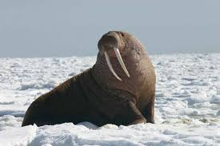
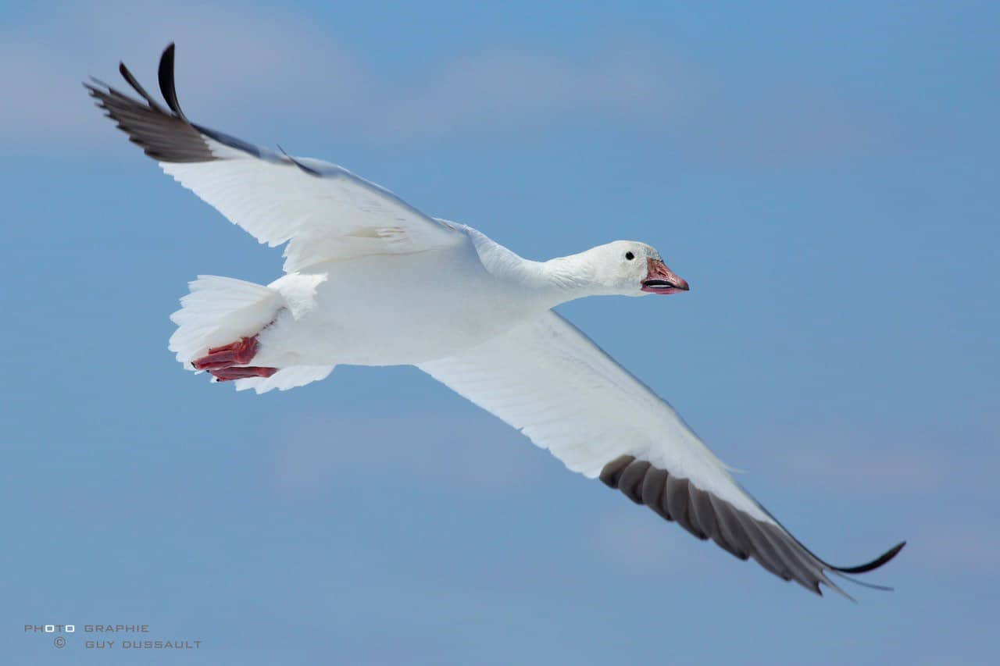

La faune et la flore de l'Arctique
L'Arctique est une région située au nord du cercle polaire arctique. Cette région forme un cercle autour du pôle et elle réparties entre la Russie, le Canada, les États-Unis, l'Islande, le Groenland ainsi que la Scandinavie. L'Arctique est recouvert d'une banquise immense qui le rend un milieu hostile, désolée avec des température qui varient entre -45° et -70°C en hiver et -30°C en été. C'est la plus vaste étendue sauvage de la Terre avec des conditions météorologiques très difficiles. Par conséquent, ces conditions laissent des places seulement pour la végétation et les animaux les mieux adaptés. Cepandant, l'Arctique est une région très sensible au changement climatique et la pollution marine avec la fonte de la banquise ce qui affecte tout l'écosystème.
L'ours polaire
L'ours polaire, également appelé ours blanc, est le plus grand prédateur terrestre. Ce mammifère peut atteindre 3m de long et peser 700 kg. L'ours polaire possède un pelage blanc afin de se cammoufler dans les paysages enneigés. Il se nourrit majoritairement de phoques et il est capable de nager en mer sur des distances importantes, parfois quelques centaines de kilomètres. Il reste environ 25000 ours polaire vivant pour la plupart dans l'Arctique canadien.
Le renard polaire
Le renard polaire, également appelé renard arctique, est un renard natif des régions arctiques. Contrairement à l'ours polaire, il est présent dans l'ensemble de l'Arctique. Le renard polaire supporte des températures allant jusqu'à -50° à l'aide de son pelage qui change de couleur selon les saisons : gris en hiver et blanc en été. Le renard polaire se nourrit de lièvres arctiques, d'oiseaux, d'oeufs et de cadavres de phoques laissés par les ours polaires.
Le lièvre arctique

Le lièvre arctique habite dans l'Arctique canadien ainsi que la toundra canadienne. Il garde sont pelage blanc toute l'année et peut atteindre un peu plus de 60 cm de longueur. En effet, le lièvre arctique est l'un des plus grands lièvre au monde. Il creuse son abri dans les congères pour se protéger du froid de l'hiver arctique. Le lièvre arctique est la proie de plusieurs prédateurs notamment le renard polaire. Afin de survivre, le lièvre peut s'enfuire à des vitesses à plus de 50 km/h.
Le boeuf musqué
Le boeuf musqué est un Capriné à l'épaisse toison vivant dans les régions arctiques du Canada, du Groenland et de l'Alaska (États-Unis). Il vit en troupeaux avec un mâle dominant afin de mieux lutter contre les prédateurs et se serre les uns contre les autres pour rester au chaud. De plus, grâce à son manteau de fourrure épaisse il peut survivre dans des température de -70°C. Il utilise également ses cornes pour creuser un passage dans la neige lorsqu'elle est trop épaisse.
Le phoque annelé

Le phoque annelé, également appelé phoque marbré, tire son nom des taches en formes d'anneaux sur son corps. Il est le phoque le plus commun en Arctique. Les phoques annelés habitent sur les côtes de la banquise. Il sont considérés comme l'un des plus petit phoque au monde. Le phoque annelé se nourrit de poissons et de crustacés. Il est la proie préférée de l'ours blanc.
Le morse
Le morse est un mammifère marin qui partage son temps entre la terre et la mer. Il vit sur les côtes de l'Arctique et se nourrit de poissons et de crustacés. Un morse peut peser jusqu'à 2 tonnes et mesure 3 mètres de long. Ses défenses mesurent environ 1 mètre de long ce qui le permet de se défendre contre les prédateurs.
Le béluga
Le béluga, également appelé baleine blance, est un mammifère marin vivant dans l'océan arctique. Les bélugas se déplacent en groupes de centaines d'individus et possèdent des sonars très sophistiqués afin de s'orienter dans les eaux infestées de glace immergés. Un béluga mesure environ 4 mètre de long et se nourrit principalement de poissons.
L'oie blanche
L'oie blanche, également appelé oie des neiges, reste en grandes colonies dans la toundra arctique. En automne, ces oies migrent en immense groupes vers le sud où ils vont passer l'hiver dans les champs du Méxique, du sud des États-Unis. L'oie blanche se nourrit de baies, de grains et d'herbes.
La sterne arctique
La sterne arctique est une espèce d'oiseau marins capable de parcourir des distances migratoire extrêmement longue. Cet oiseau parcourt une boucle d'environ 35000 km qui le mène de l'Arctique à l'Antarctique. Sur le chemin, la sterne arctique profite de la nourriture abondante.
Le saule arctique
Le saule arctique est l'un des plus petits arbres du mondes. Il est capable de survivre dans le milieu hostile de l'Arctique. On le trouve principalement autour de l'océan Arctique dans les zones rocheuses et des toundras. C'est un arbre nain qui ne dépasse pas les 20 cm de hauteur. Le saule arctique, étant tout en-bas de la chaîne alimentaire de l'Arctique, nourrit plusieurs animaux comme le lièvre arctique et le boeuf musqué.